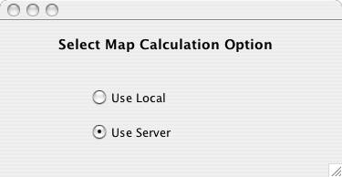

When user chooses the option Select Map Calculation Option from the control panels then he/she can decide whether to do the ScenarioShakeMap calculations on the server or on the user's own local machine, as shown in Fig - 1. By default calculations are done on the server. Internet connection is necessary in order to perform the calculations on the server.
|  |
|
Fig -1: Window that allows user to choose if Scenario shakemap calculations have to be done on server or on user's own local machine. |